Using the AngularJS Component
A step-by-step guide to using the Neural Activity Visualizer AngularJS component. We will build a simple web page to visualise electrophysiology data files and deploy it on a web server.
Step 1
Create a new directory. Here we are creating one named
NeoViewer:
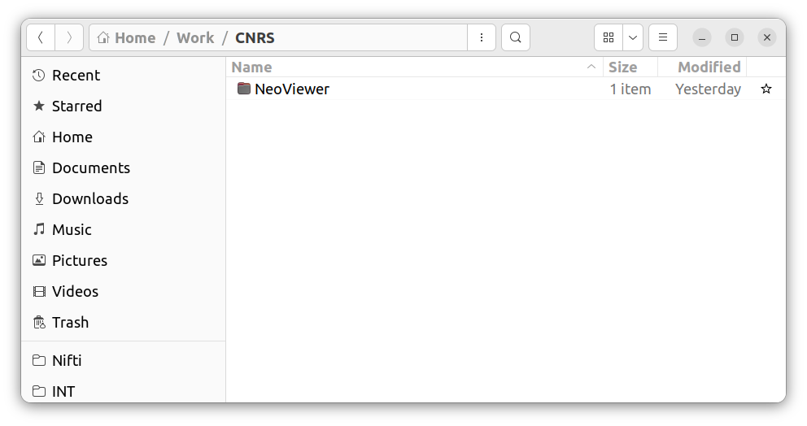
Step 2
Inside this directory create a new file named
index.html:
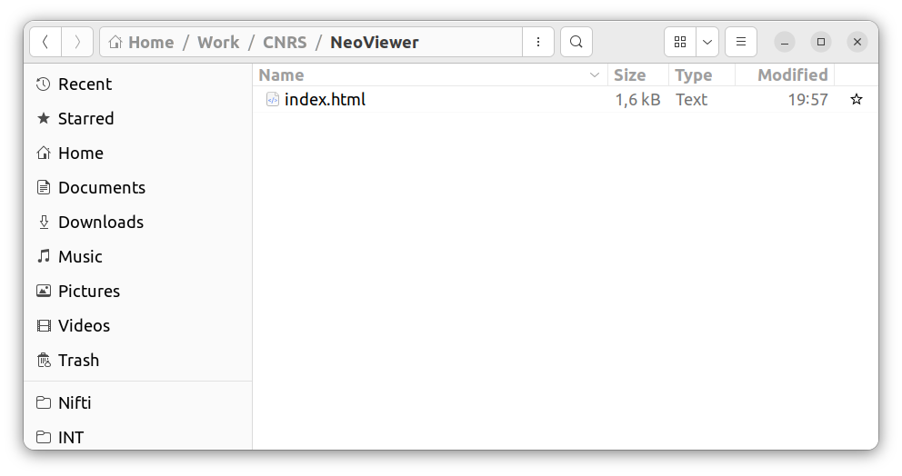
Step 3
Copy-paste the following code into
index.html:
<!DOCTYPE html>
<html lang="en">
<head>
<link rel="stylesheet" href="https://maxcdn.bootstrapcdn.com/bootstrap/3.3.7/css/bootstrap.min.css">
<script src="https://cdnjs.cloudflare.com/ajax/libs/angular.js/1.7.5/angular.min.js"></script>
<script src="https://cdnjs.cloudflare.com/ajax/libs/angular.js/1.7.5/angular-resource.min.js"></script>
<script src="https://cdnjs.cloudflare.com/ajax/libs/angular-nvd3/1.0.9/angular-nvd3.min.js"></script>
<script src="https://cdnjs.cloudflare.com/ajax/libs/plotly.js/1.51.1/plotly.min.js"></script>
<script src="https://cdn.jsdelivr.net/gh/NeuralEnsemble/neo-viewer@master/js/angularjs/src/visualizer.js"></script>
<script src="https://cdn.jsdelivr.net/gh/NeuralEnsemble/neo-viewer@master/js/angularjs/src/services.js"></script>
</head>
<body>
<div id="root">
<div class="container" ng-app="neo-visualizer">
<div ng-controller="URLFormController">
<br />
<form class="form-inline angular-container">
<div class="form-group">
<label for="dataFileURL">URL of data file:</label>
<input type="text" class="form-control" ng-model="dataFileURL"
id="dataFileURL" placeholder="enter data file URL here"
style="width: 600px;">
</div>
</form>
<br /><br />
<div class="row angular-container">
<visualizer-view ng-if="dataFileURL" source="{{dataFileURL}}" height=300>
</visualizer-view>
</div>
</div>
</div>
</div>
</body>
</html>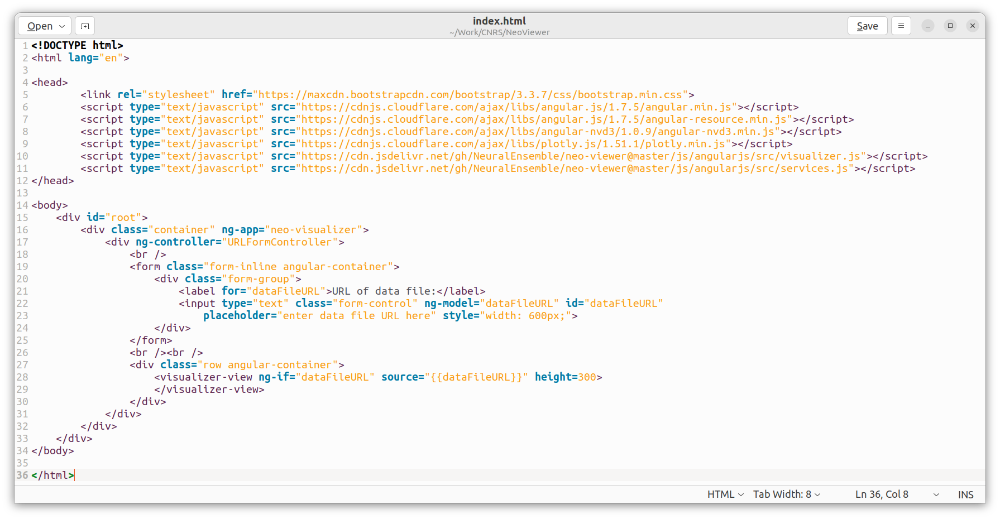
Step 4
Your visualizer is ready. Open
index.html in your web browser:
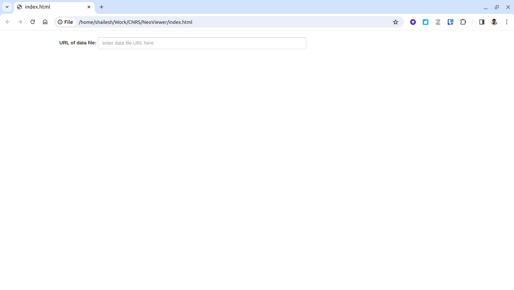
Step 5
Paste a data file URL into the input box. Here is an example:
The visualizer will load and display the file's metadata:
https://data-proxy.ebrains.eu/api/v1/buckets/pc0a33-Migliore_2018_CA1/exp_data/abf-int-bAC/Ivy_960711AHP3/96711008.abf
The visualizer will load and display the file's metadata:
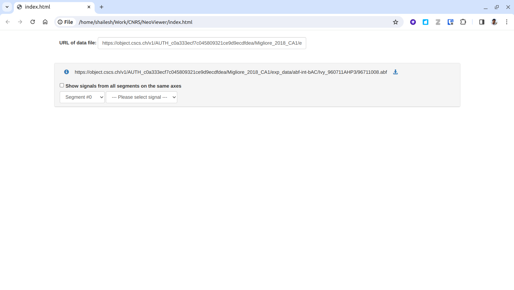
Step 6
Select the signal of interest and the visualizer will display it:
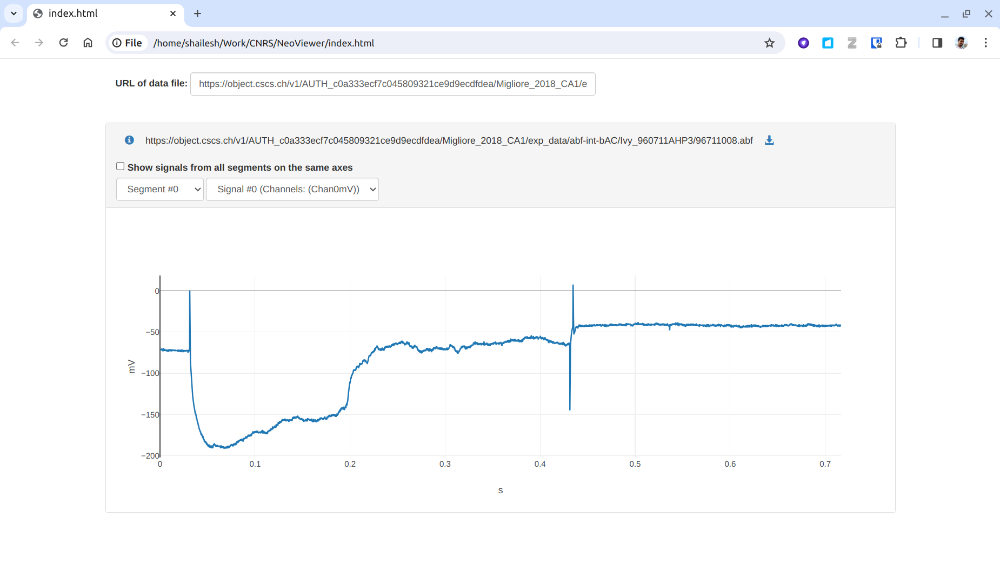
Step 7

Step 8
Log in with your GitHub account:

Step 9
On the overview page, click Add new site:
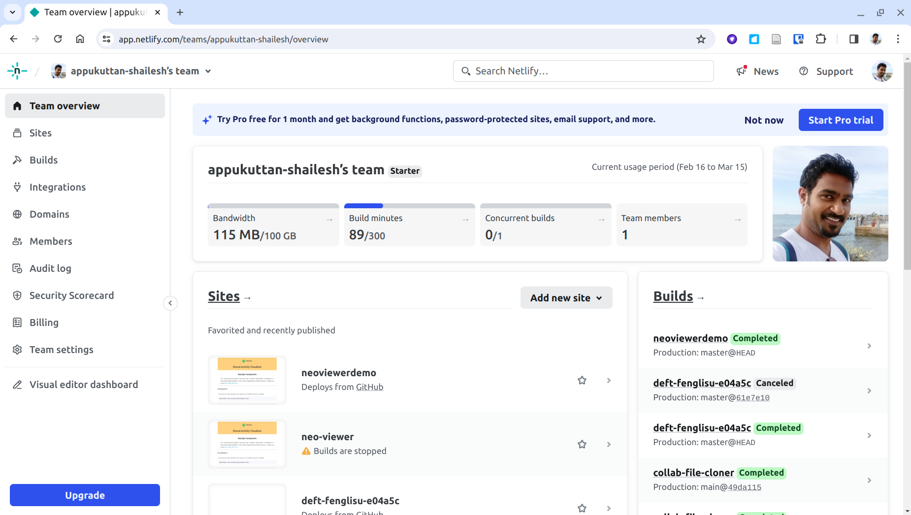
Step 10
Click Deploy manually from the dropdown:
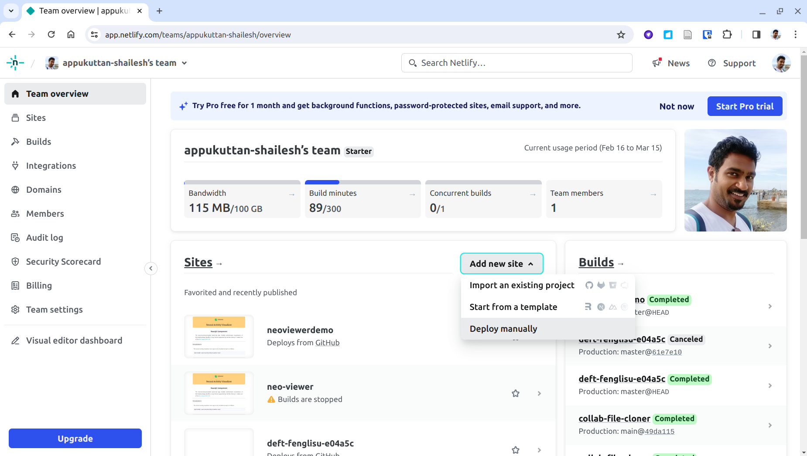
Step 11
Drag and drop your
NeoViewer folder (from Step 1) onto the upload area:
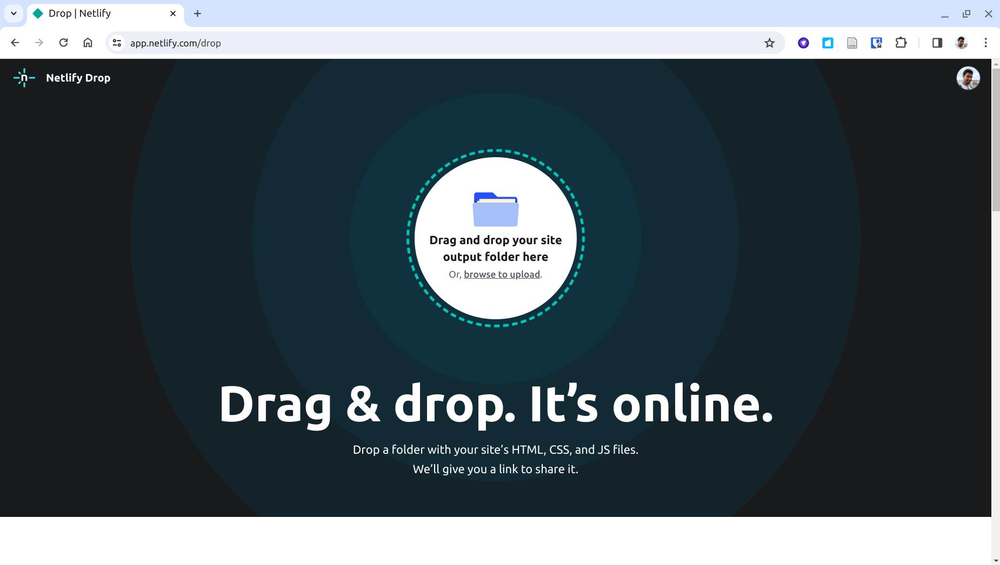
Step 12
You will see the data uploading:
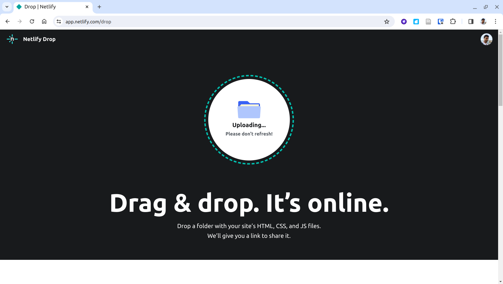
Step 13
Once deployment is complete:
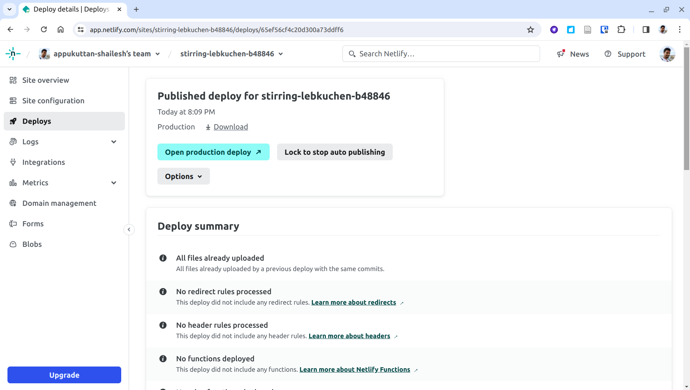
Step 14
Click Site Overview to find your deployed URL. Netlify assigns
a random name — you can change it in the next step. Click the URL to visit your site:
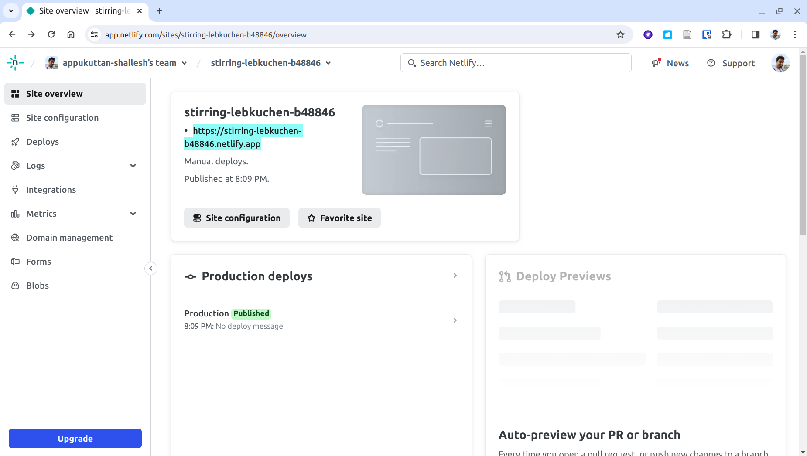
Step 15
Your visualizer is now live on the internet:
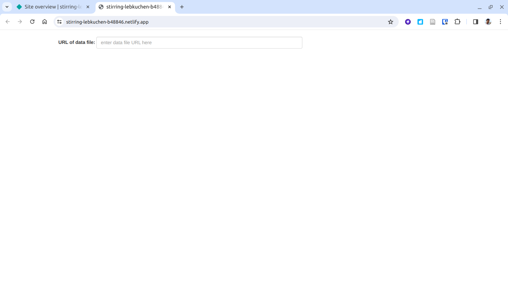
Step 16
To change your site name (and URL), go to Site configuration
in the left menu and click Change site name:
You can share the URL with anyone to give them access to the visualizer, or embed it in another website.
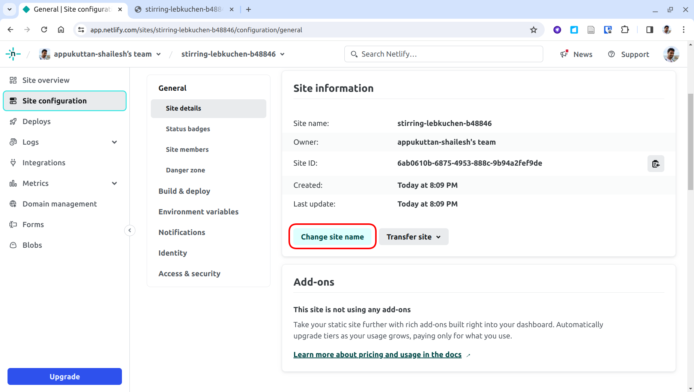
You can share the URL with anyone to give them access to the visualizer, or embed it in another website.